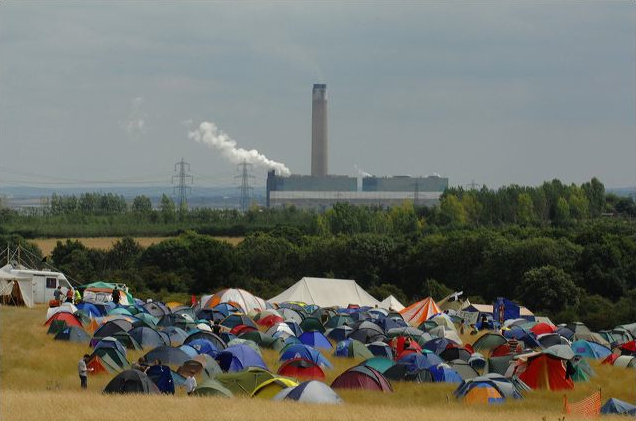
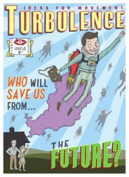
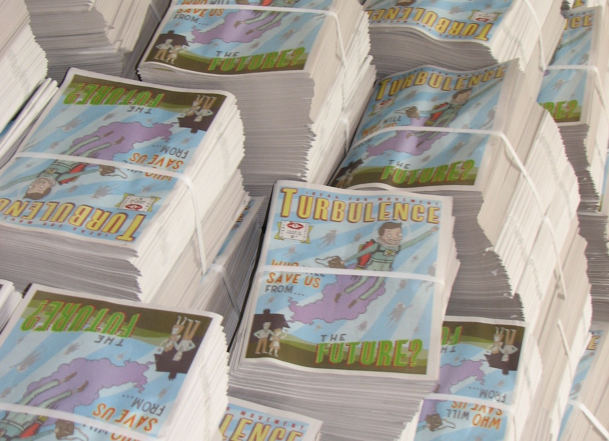
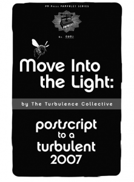

Turbulence @ ESF in Malmoe
Thousands of copies of Turbulence 4, ‘Who will save us from the future?’ will be being distributed at next week’s European Social Forum (ESF) in Malmoe, Sweden (18-21 September 2008).
Grab your copy there, if you don’t already have one. Or better still, grab a bundle of 10, 20, 50, 100,… to take back to your local independent bookshop, social centre, university, or group of mates.
{kind=link}
Update: Copies will be available as of Thursday afternoon/Friday morning from Utkanten (English info) social centre. The address is:
Utkanten, Industrigatan 20, Malmoe.
And there’s a map here.
Enquiries: editors@turbulence.org.uk
For details about events at and around the Forum, check out one or more of the following links:
European Social Forum (see also here)
Actions and Demos ‘News-ticker’ feed
Climate Camps 08: Some Early Analysis
Photo: Guy Smallman
{kind=link}
This summer (2008) Camps for Climate Action have been held in several countries. While we didn’t make it to some of them, such as the quite significant Australian event, the latest issue of Turbulence was distributed in some numbers at both the British and German camps, while members of the Turbulence collective also participated in the talks and workshops that were held there.
As part of this intervention we have both gathered together some record of our contributions as well as some analysis of the events that we have come across. You can find it all here.
Turb_04 North American Launch
Thousands of copies of Turbulence 4, Who Will Save Us From the Future?, have now been printed and are available in North America.
{kind=link}
Copies will be around at the protests against the Republican National Convention (info here and here) in St. Paul, Minneapolis (1-4 September 2008). Grab your copy there; or better, take a bundle to distribute in your corner of the world or throughout your networks.
You’ll be able to pick up copies at the protest Convergence Centre. The address is: 627 Smith Ave S St. Paul, Mn 55107.
Tel.: (651) 293 3968.
Alternatively, copies can either be ordered from PM Press or directly from us (for the cost of a donation towards postage) by emailing editors[at]turbulence.org.uk
‘MitL?’ Republished by ‘Le Monde Diplomatique Brasil’
‘Move into the Light? Postscript to a turbulent 2007’ has been republished by Le Monde Diplomatique Brasil on July 16 2008. The translation was carried out by Caia Fittipaldi.
{kind=link}
More translations can be found here.
‘The movement is dead,…’ Danish translation
A Danish translation of Tadzio Mueller’s article, ‘The Movement is Dead, Long Live the Movement’ in Turbulence 4 is now available here. The article was translated by David Balleby Roenbach, an activist involved with KlimaX, and has been published by modkraft.dk
{kind=link}
Other translations are available here. Get in touch with us at editors[at]turbulence.org.uk if you can help out with future transations.
‘Et tu Bertinotti?’ Greek Translation
Sandro Mezzadra’s article (with an Introduction by Keir Milburn and Ben Trott), Et tu Bertinotti? from Turbulence 4 is now available in Greek.
Other translations are also available here.
If you can help with other translations, email us at: editors@turbulence.org.uk
Urgent Appeal for Donations
A couple of weeks ago, we sent to print the fourth issue of Turbulence: Ideas for movement entitled ‘Who Can Save Us From the Future?’ Containing articles and other contributions from John Holloway, George Caffentzis, The Free Association, Christian Frings, David Harvie, Sandro Mezzadra, Felix Guattari, Fabian Frenzel and Octavia Raitt, Tadzio Mueller, Harry Halpin and Kay Summer, Keir Milburn, Rodrigo Nunes, Ben Trott, and Kristyna Baczynski, as well as the Turbulence collective, we’ve been delighted with the positive response the magazine has so far received.
Turbulence is available for free, both in print and online. However, to ensure this can remain the case, we rely on generous donations from our readers. Printing Turb_04 set us back several thousand pounds, and distribution costs have so far stretched into the many hundreds. We’re thrilled to be receiving so many orders and requests for copies, but we have now well and truly run out of cash.
If you’ve already received a copy in the post, picked up the latest issue at a bookstore near you, or hope to be able to get your hands on one in the near future, please consider making a donation no matter how small!
Donations can be made via the PayPal button here.
If you’d rather pay directly into our bank account or write us a cheque, get in touch with us at editors@turbulence.org.uk
‘Global Capitalism: Futures and Options’ German Translation
Christian Frings’ article in Turbulence 4, ‘Global Capitalism: Futures and Options’ is now available in German online here.
More translations to follow soon. If you can help, get in touch: editors@turbulence.org.uk
Turbulence @ The Climate Camp
Many of the Turbulence collective will be taking part in the Camp for Climate Action, starting this weekend.
{kind=link}
We will, of course, be distributing copies of the new magazine at the camp (remember to grab a bundle to take back to your local independent bookshop, social centre, or wherever else you can think of to distribute copies!)
We’re also going to be participating in a number of workshops, discussing some of the issues brought up in our latest publication and more.
On Thursday 7 August, The Free Association (many of whom are also involved with Turbulence) will be running a workshop entitled ‘Who Can Save Us From the Future? Capitalism, Crisis, Austerity and Freedom’. It will be taking place in Space B at 4:30pm.
In an unfortunate clash, Turbulence editor Tadzio Mueller will be taking part in a discussion entitled, ‘Copenhagen 2009 – What Will Be the Camp’s Response?’ at the same time. Mona Bricke and John Jordan will also be participating in the event which takes place in Space G.
Tadzio Mueller will also be discussing ‘Which Way Forward for the Climate Movement’ with Simon Lewis and Mona Bricke from 2pm on Thursday 7 August, also in Space G.
One of the Turbulence Collective, Keir Milburn, will also be taking part in the discussion, ‘The Road to 90% and the Role of the State’ alongside George Monbiot, Almuth Ernsting and others. The event takes place on Tuesday 5 August in Space A from 7:30pm.
The full programme for the Camp is available here. And information about the location is here.
The English version of a short text on the issue of climate change, written by Turbulence and published in the Block G8 brochure, ‘Chef es sind zu viele’ is online here (and in German here).
And don’t forget the Klimakamp in Germany from 15-24 August in Hamburg!
‘Move into the Light?’ Republished by PM Press

‘Move into the Light? Postscript to a Turbulent 2007’ has been republished by PM Press.
Copies can be ordered directly from PM Press here. (Or from Amazon.com).
Product Details
Written by: Turbulence Collective
Published by: PM Press
ISBN: 978-1-60486-031-3
Pub Date: July 2008
Format: Pamphlet
Page Count: 20
Size: 5.5 by 8.5
-
Who we are

Turbulence is a journal/newspaper that we hope will become an ongoing space in which to think through, debate and articulate the political, social, economic and cultural theories of our movements, as well as the networks of diverse practices and alternatives that surround them. Read more here
-
Turbulence on Myspace